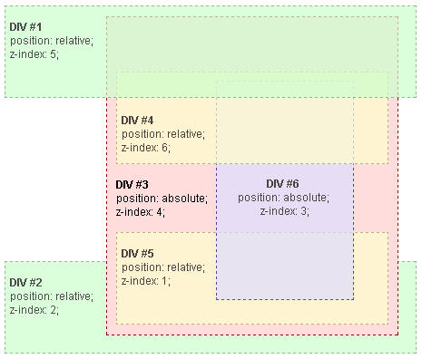

initial - сбрасывает до значения по умолчанию
inherit - позволяет явно задать наследуемость какого-то из свойств
unset - с наследуемыми свойствами ключевое слово unset ведёт себя как inherit
с ненаследуемыми свойствами оно ведёт себя как initial
revert - сбрасывает значение свойства до указанного в стилях браузера
Basis
:root {
--color-cyan: #000fff; - определяем кастомное свойство
}
p {
background-color: var(--color-cyan);
}
Получение значения CSS-переменной через JavaScript:
const root = document.querySelector(':root')
const rootStyles = getComputedStyle(root)
const mainColor = rootStyles.getPropertyValue('--color-cyan')
box-sizing: content-box; - (default) cв-ва width и height включают только content
border-box; - cв-ва width и height включают content + padding + border
* scrollbar (если он есть) является частью padding'a. То есть если есть правый
скролл, но padding-right: 0, то правый padding будет не 0, а, например, 17px.
А если padding-right: 10px, то правый padding будет: 10px + 17px = 27px

inline (строчным) элементам нельзя задать ширину/высоту и верхние/нижние
отступы (padding/margin), в отличае от inline-block
inline-block (строчно-блочные) элементы отличаются от block (блочных) только
тем, что занимают ширину по контенту и выстраиваются в ряд, как строчные
block (блочным) элементам можно задать всё
-webkit-: Chrome 28+, Chromium, Opera 15+, Vivaldi, Brave, Яндекс.Браузер, Edge (движок Blink)
или Safari, ios Chrome, Android browser (движок Webkit)
-moz-: Firefox (движок Gecko)
-ms-: IE
Если перед названием свойства стоит некоторый префикс, то это означает, что
данное свойство реализовано и будет применяться исключительно в указанном браузере
Когда экспериментальное свойство утверждено в стандарте и
прошло тестирование в браузере, у него обычно убирается префикс
div элемент типа div
br + p p идущий непосредственно после br
br ~ p все p идущие после br
:root - <html>
:first-child - любой элемент, являющийся первым в своём родителе
p:first-child - все p, являющиеся первыми в своём родителе
(если 1й ребенок родителя span, а 2й p - стиль к p не применится)
:nth-child() - любой элемент в своём родителе, удовлетворяющий формуле
(3) - 3 (3n) - 3,6... (3n+4) - 4,7... (-n+3) - 1,2,3
(n+2):nth-child(-n+5) - 2,3,4,5
p:nth-child() - все дочерние элементы p, удовлетворяющие формуле
(если под формулу попал не p - пропускается)
p:nth-of-type() - в отличае от p:nth-child счет начинается не с любого 1го
элемента, а с 1го элемента p и идет только по типам p
:only-of-type - все единственные дочерние элементы каждого типа у родителя
p:only-of-type - дочерний элемент типа p, если у родителя больше нет p кроме него
:only-child - дочерний элемент, если он единственный у родителя
p:only-child - дочерний элемент типа p, если он единственный у родителя
small ( :only-of-type )
div ( div:nth-child(2) )
span ( span:first-of-type, :only-of-type )div ( :nth-of-type(2) )
a:link - еще не посещенные ссылки
a:visited - добавляется ссылкам, по которым уже переходил пользователь
:active - стили для элемента, с которым происходит взаимодействие прямо
сейчас (пока на кнопке зажата клавиша мыши)
:focus - определяет стиль для элемента, получающего фокус
(при переключении клавишей Tab или при клике на элементы формы.
Например, если кликнуть по кнопке или в поле ввода текста)
:not - p:not(.myClass)
ul li:not(:first-child):not(:last-child) - не первый и не последний
:is() - :is(header, main, footer) p - все p внутри header, main и footer
:has() - a:has(img) - ссылки с img внутри
::placeholder
атрибут title применяется почти ко всем тегам и работает всплывающей подсказкой (tooltip)
если min-width > max-width, то min-width 'выигрывает', т.е. ширина
элемента становится равной min-width, не смотря на заданный max-width!
При этом контент элемента не меняет его ширину, как будто задана width: min-width;
min-width: min-content; - минимальная ширина = самому длинному слову
position
Элемент со значением position: static не является позиционированным элементом.
Это важный момент, потому что элементы с любым другим значением свойства position
создают внутри себя контекст наложения и становятся опорными.
Опорным элементом будем называть такой, относительно которого позиционируются
дочерние элементы
position: static; - элемент в нормальном потоке документа.
left, right, top, bottom и z-index игнорируются
position: relative; - отображение может быть смещено относительно своего начального положения
при помощи left, right, top, bottom. Это смещение чисто визуальное и не
затрагивает положение соседних элементов, кроме случая, когда элемент
выходит за границы родителя, имеющего возможность прокрутки.
Если left, right, top, bottom в %, то смещение относительно родителя.
position: absolute; - элемент выходит из потока => соседние блоки и родительский его не
видят. Если для абсолютно позиционированного элемента не заданы
свойства left, right, top, bottom, то он останется на исходном месте.
Позиционируется относительно ближайшего позиционированного предка или
относительно <html>.
Становится блочным и его ширина будет определяться шириной контента
position: fixed; - элемент позиционируется относительно окна браузера, за исключением
случаев, если один из родителей имеет значения свойств transform,
perspective или filter, отличные от none. В этом случае блок становится
опорным, и позиционирование будет производиться уже относительно него,
а не окна браузера.
Выходит из потока => соседние блоки его не видят
position: sticky; - элемент позиционируется в нормальном потоке так же, как и статичный,
а затем смещается при помощи свойств left, right, top, bottom
относительно ближайшего родителя, имеющего прокрутку.
Элемент остаётся «приклеенным» во время прокрутки родителя до тех пор,
пока не «встретит» противоположную границу своего родителя.
float вырывает элемент из нормального потока документа.
Что бы текст мог обтикать картинки или другие элементы слева/справа есть
св-во float со значением left (уходит влево и обтекается) или right (уходит
вправо и обтекается).
Разработчики поняли что можно с помощью float строить многоколоночные макеты.
Для элементов с обтеканием принято задавать размеры, т.к. они подстраиваются
под размер контента в нем.
Если 1му и 3му блоку задать float: left; и float: right; соответственно, то
2й блок перескочит на верхний ряд, т.е. он займет все освободившееся пространство
справа. А 3й блок не переместится на верхний ряд и не станет справа от голубого.
Однако 3й блок так же подстроится под контент и прижмется вправо + он выволится
за границы родительского блока
Если 2му блоку вместо 3го задать float: right, то все блоки станут в один ряд и вроде
бы находятся внутри родителя. Все блоки станут в один ряд т.к. 3й блок не видит первые 2,
т.к. они выпали из потока, и займет их место. Отсюда и вытекает построение layout'a с
помощью float:
в разметке 1м должен быть элемент который находится слева, 2м - который справа и только
потом основной контент

Если убрать 3й блок без float, то видно что родительский элемент не видит 1й и 2й
элементы со св-вом float
Для решения этой проблемы есть такие хаки:
1. задать родителю overflow: auto; что бы он расхлопнулся и принял высоту блоков с float
2. добавить div после родительского для блоков с float элементов, которому
задать clear: both; для очистки обтекания. Но тогда появляется лишний div в разметке
3. родителю создавался псевдоэлемент ::after для очистки потока со св-ми:
.wrapper::after {
display: block;
content: '';
clear: both;
}
Подитоживая: если задаем float элементу, то нужно создавать clearfix родителю
Контекст наложения
Контекст наложения (stacking context) - концепция трёхмерного расположения
HTML-элементов вдоль оси Z.
Позиционирование и присваивание HTML-элементам свойства z-index создаёт
контекст наложения, (так же как и присваивание элементу opacity меньше 1).
Контексты наложения могут быть частью других контекстов наложения и вместе
создавать иерархию контекстов наложения

максимальное значение z-index: 2147483647
vertical align
1.
.parent {
display: table-cell;
vertical-align: middle;
}
2. positioning
3. flexbox
4. grid:
.parent {
display: grid;
align-items: center;
}
or
.parent {
display: grid;
place-items: center;
}
or
.parent {
display: grid; (or display: flex;)
}
.child {
margin: auto;
}
flexbox
flex-контейнер:
у flex-контейнера 2 оси: главная и поперечная
flex-direction: column - напрвление главной оси (напрвление поперечной менять нельзя):
значения:
row (default), row-reverse, column, column-reverse
justify-content: center - распределение флекс-элементов по главной оси;
значения:
flex-start (default), flex-end, space-between, space-around, center
align-items: stretch - распределение флекс-элементов по поперечной оси в каждом
поперечном ряду;
значения:
stretch (default), flex-start, flex-end, center, baseline
align-content: center - растягивание рядов по поперечной оси (применяется для
нескольких поперечный рядов);
значения:
stretch (default), flex-start, flex-end, center, space-around,
space-between
flex-wrap: wrap - указывает, следует ли флексам располагаться в один ряд
или можно занять несколько рядов при необходимости если
флексы не помещаются в один (по дефолту в один, ряды
всегда идут параллельно главной оси);
значения:
nowrap (default), wrap
flex-flow: column wrap - = flex-direction + flex-wrap
flex-элементы:
если главная ось горизонтальная, то главный размер flex-элемента
это flex-basis или ширина, а если вертикальная – flex-basis или высота.
flex-basis: 500px - базовый размер флекс элемента по основной оси;
если элементы с flex-basis не влазят во flex-контейнер,
то размер flex-элемента будет уменьшаться до минимального
размера содеражимого (например до самого короткого слова).
Если для элемента одновременно заданы flex-basis (отличное
от auto) и width (или height в случае flex-direction: column),
то flex-basis имеет приоритет.
flex-basis ограничивается значениями min/max-width/height.
flex-basis: 0 - не задаст флекс-элементу, с каким то
содержимым, ширину 0, в отличае от width: 0, а задаст
минимально возможную ширину по содержимому.
Чтобы сделать ширину 0 для непустого флекс-элемента,
альтернативой width: 0; является flex-basis: 0; + min-width: 0;
значения:
auto (default, размер основывается на содержимом элемента),
< ширина > (px, %, …)
flex-grow: 0 - определяет, сколько пространства может занимать флекс внутри
контейнера, т.е. жадность флекса относительно свободного
пространства (ширина/высота контейнера минус flex-basis
флексов (или их width/height));
значения:
0 (default) - ∞
flex-shrink: 1 - определяет, сколько пространства может пожертвовать флекс
для других флексов внутри контейнера, т.е. антипод flex-grow;
значения:
0 - ∞ (default: 1)
flex: 0 1 200px - = flex-grow + flex-shrink + flex-basis;
значения:
none, [flex-grow flex-shrink? || flex-basis];
(default: 0 1 auto)
align-self: center - выравнивает flex-элемент по поперечной оси как св-во
align-items, только для конкретного флекса;
значения:
auto (default), flex-start, flex-end, center, baseline, stretch
order: 0 - определяет порядок вывода флексов внутри контейнера;
(default: 0)
* flex-элементы во flex-контейнере можно отцентровать маржинами и по вертикали (margin: auto)
grids
grid-контейнер:
display: grid - создает grid-контейнер
grid-template-areas: - определяет шаблон сетки (пример расчитан на 2 колоночную
"header header" сетку), ссылаясь на имена областей сетки, которые указаны
"aside article" в свойстве grid-area; если вместо "aside footer" указать
"aside footer" ". footer", то вместо точки будет пустота (. - пустота)
grid-template-columns: minmax(150px, 250px) 1fr 1fr - определяет количество и ширину
колонок
grid-template-rows: 50px 70px - определяет высоту указанных (в
примере первых 2x) рядов
grid-template: 50px 70px / minmax(150px, 250px) 1fr 1fr - = grid-template-rows +
grid-template-columns (через /)
grid-auto-rows: minmax(80px, auto) - дефолтное значение высоты рядов, если
она явно не задана в grid-template-rows
(auto: по высоте контента)
grid-column-gap: 20px - расстояние между колонами
grid-row-gap: 15px - расстояние между рядами
grid-gap: 20px 15px - = grid-row-gap + grid-column-gap
grid-auto-flow: column - задает заполнение grid-элементов вдоль
колонки, т.е. сверху-вниз, после
заполнения последнего ряда переходит
на следующую колонку
значения:
row (default), column, dense, row dense,
column dense
justify-items: - выравнивает grid-элементы внутри своей
ячейки по оси-X (горизонтальное выр-е);
значения:
start, end, center, stretch (default)
align-items: - выравнивает grid-элементы внутри своей
ячейки по оси-Y (вертикальное выр-е);
значения:
start, end, center, stretch (default)
grid-элементы:
grid-area: < name > - дает grid-элементу имя (grid-area: header),
чтобы на него мог ссылаться шаблон, созданный
с помощью grid-template-areas
grid-column-start: 2 - начальная колонка конкретного grid-элемента
в сетке (т.е. например, если задать 1му
элементу, то он будет начинаться не с первой
ячейки в сетке (по дефолту), а со второй, а на
месте первой ячейки будет пустое пространство)
grid-column-end: 4 - конечная колонка конкретного grid-элемента
(например, элемент займет место со второй по
четвертую ячейки, т.е. 2 штуки - вторая и
третья ячейки);
если указать grid-column-end: -1, то растянется
на все оставшиеся колонки в ряду;
для понимания, изначально 1й элемент занимает
с 1й по 2ю позицию, второй - со 2й по 3ю
grid-column: 1 / -1 - = grid-column-start + grid-column-end (через /)
grid-row-start: 1 - начальный ряд конкретного grid-элемента
grid-row-end: 3 - конечный ряд конкретного grid-элемента
grid-row: 1 / 3 - = grid-row-start + grid-row-end (через /)
justify-self: - выравнивает конкретный grid-элемент внутри
своей ячейки по оси-X, т.е горизонтальное
выравнивание;
значения:
start, end, center, stretch (default)
align-self: - выравнивает конкретный grid-элемент внутри
своей ячейки по оси-Y, т.е вертикальное
выравнивание;
значения:
start, end, center, stretch (default)
значения свойств / единицы измерения / ф-ии grid-свойств:
fr - фракция (часть); единица измерения в grid для адаптивности
repeat(3, 1fr) - функция повторения в grid; например, 3 колонки по 1 фракции
100px repeat(2, 1fr 2fr) - фиксированная колонка/ряд + чередование; 100px + 2 раза
по 1fr 2fr, т.е.: 100px 1fr 2fr 1fr 2fr
minmax(150px, 250px) - функция задания минимального и максимального размера в grid
auto-fill - для складывания колонок если они упираются в размер экрана;
например, если колонки сузились до 149px и уже не помещается
4 колонки в экране, то их становится 3 и т.д.:
grid-template-columns: repeat(auto-fill, minmax(150px, 1fr))
animation / keyframes
keyframes - ключевые кадры, которые разбивают анимацию на части
.loader {
width: 100px;
height: 100px;
animation: myRotate 1s infinite linear;
}
/* ключевые кадры */
@keyframes myRotate {
from {
transform: rotate(0deg) scale(1);
}
to {
transform: rotate(360deg) scale(1.4);
}
}
css rare props
pointer-events: none; - элемент не воспринимает взаимодействия с курсором
(нельзя перейти по ссылке, у нее нет hover'a)
-webkit-line-clamp: int; - обрезает текст до определенного количества строк.
работает в связке таких св-в:
display: -webkit-box;
-webkit-line-clamp: 2;
-webkit-box-orient: vertical;
overflow: hidden;
scroll-behavior: smooth; - задает плавный скролл например для якорных ссылок
will-change: transform; - оптимизирует анимацию, сообщая браузеру, какими
свойствами и элементами предстоит управлять
user-select: none; - текст элемента и вложенных в него элементов не
выделяется
word-break: break-all; - перенесет строку, разрывая слова, даже если они
помещяются
word-break: break-word; - перенесет строку, разрывая слова, только если они
не помещяются
table-layout: fixed; - устанавливает ширину таблицы точно по св-ву
width, при этом столбцы станут одинаковой ширины
не зависимо от содержимого ячеек
filter: drop-shadow() - добавляет тень к изображениям. В отличие от
свойства box-shadow во внимание принимаются
прозрачные участки в изображении и тень отбрасывается
с их учётом. Т.е. можно добавить тень png/svg
clip - можно обрезать элемент, оставив видимой только его часть
background-clip - определяет как цвет фона или фоновое изображение
будут выводиться под границами блока
preprocessors
Запуск через консоль:
npm i -g sass, команды: sass --watch input.scss:output.css (компилировать файл)
sass --watch scss:css (компилировать все из /scss в /css)
В Sass строгость отступов: или только табы или только пробелы!
Компилятор SCSS игнорирует файлы начинающиеся с _ (например _variables.scss)
и обычно такие файлы импортируют в обычные файлы без _, чтобы заюзать их стили
h1 { h1
color: #0982C1; or color #0982C1
}
Переменные:
$siteWidth: 1024px;
Вложенность:
Sass, LESS, & Stylus - одинаковая (& - ссылка на родительский селектор)
Миксины:
@mixin error($borderWidth: 2px) {
border: $borderWidth solid #F00;
color: #F00;
}
.login-error {
@include error(5px);
}
Наследование:
.block {
margin: 10px 5px;
padding: 2px;
}
p {
@extend .block;
}
Переменные:
@mainColor: #0982c1;
Вложенность:
Sass, LESS, & Stylus - одинаковая (& - ссылка на родительский селектор)
Миксины:
.error(@borderWidth: 2px) {
border: @borderWidth solid #F00;
color: #F00;
}
.login-error {
.error(5px);
}
Наследование:
.block {
margin: 10px 5px;
padding: 2px;
}
p {
.block;
}
h1 { h1 h1
color: #0982C1; or color: #0982C1; or color #0982C1
}
Переменные:
mainColor = #0982c1
Вложенность:
Sass, LESS, & Stylus - одинаковая (& - ссылка на родительский селектор)
Миксины:
error(borderWidth= 2px) {
border: borderWidth solid #F00;
color: #F00;
}
.login-error {
error(5px);
}
Наследование:
.block {
margin: 10px 5px;
padding: 2px;
}
p {
@extend .block;
}
PostCSS
old.css -> postCSS -> new.css
PostCSS - инструмент для трансформирования стилей с помощью js плагинов.
Позволяет писать код используя современные фичи css, добавляя полифилы.
PostCSS берет css и строит Abstract Syntax Tree (AST).
Работает как вместе c препроцессорами, так и самостоятельно. Может работать
с gulp, webpack.
Чтобы использовать PostCSS нужно установить хотя бы один плагин.
Пример плагинов: autoprefixer, cssnano, stylelint (уведомляет про ошибки),
postcss-mixins (для миксинов) postcss-nested (для вложенности стилей)
how to Set Up PostCSS?
npm i -g postcss-cli
then install locally
npm i -D postcss
CLI command:
postcss [input.css] [OPTIONS] [-o|--output output.css] [--watch|-w]
run the following command in the terminal:
postcss src/style.css --use postcss-import -o public/style.css --w
--use - lists the plugins we're using
--watch - watches the files for any changes and recompiles them
setup PostCSS in the package.json scripts:
"postcss:watch": "postcss src/style.css --use postcss-import -o public/style.css --w"
setup PostCSS by Config File postcss.config.js:
module.exports = {
plugins: [ // plugins must be first
require('postcss-preset-env'), // convert modern CSS via polyfills
require('postcss-nested'),
require('postcss-mixins'),
require('postcss-import'),
require('autoprefixer'), // use browserslist from package.json
// ( "browserslist": ["defaults"] )
require('stylelint'),
require('stylelint-order'), // specify the order of properties
require('postcss-reporter'),
require('cssnano') // reduce the final CSS file
],
rules: {
"order/properties-order": [
"width",
"height"
]
}
}
the command in our package.json (without --use):
"postcss:watch": "postcss src/style.css --dir public --watch"
настроить stylelint можно по разному, например в .stylelintrc:
{
"rules": { // ошибки при не соблюдении
"color-no-invalid-hex": true
}
}
adaptive vs responsive web design
Адаптивный дизайн предполагает, что сервер определяет пользовательское
устройство и движок бразера (iphone, tablet, desktop...), и в зависимости от
него, отдает клиенту определенную версию сайта. пример: мобильная версия facebook.
Адаптивный дизайн используется в больших компаниях. Бывает 2 стратегии создания
адаптивного дизайна: progresive enhancement (прогрессивное улучшение) и
graceful degradation (изящная деградация).
Progresive enhancement предполагает создание кода, который поддерживают старые
браузеры и далее шаг за шагом создаем сайт, который выглядит хорошо на большинстве
современных браузерах.
Graceful degradation предполагает создание кода с последними фичами, который
поддерживают самые современные браузеры и затем упррощая его, что бы сайт так же
хорошо отображался в старых браузерах.
Преимущества адаптивного подхода: Недостатки адаптивного подхода:
- быстрее скорость загрузки чем у - сложней реализуем из-за нескольких
отзывчивого подхода вариантов кода (two sets of code)
- лучше адаптирует ui и функционал - сложней поддерживать
под какое то устройство (моб)
Отзывчивый дизайн основан только на размере (ширине) экрана; Он меняет верстку при
ресайзе страницы, приспосабливая ее к любому устройству. Легко определить что на сайте
responsive design: при эмулятивном ресайзе сайта в боаузере он одинаково хорошо
выглядит и на узких мобильных и на широких экранах.
Преимущества отзывчивого подхода: Недостатки адаптивного подхода:
- легче реализуем из-за одного - медленее скорость загрузки чем у
варианта кода (one set of code) адаптивного подхода
- same url structure - не отображается одинаково хорошо
- легче поддерживать на всех устройствах
- лучше для поисковых движков